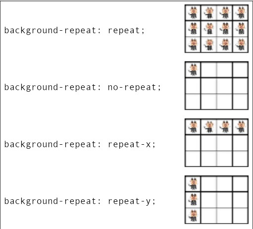
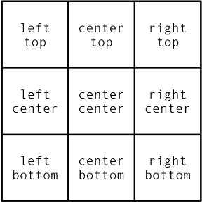

Imagens que se repetem no fundo do site
Você pode usar imagens que estão na web como imagem de fundo para seu site, para isso basta você abrir a imagem e pegar copiar o link dela. No entanto, caso a imagem veia a ficar fora do ar você perderá a imagem, já que ela não está hospedada na sua hospedagem.
background-size:
A propriedade background-size permite você modificar o tamanho da imagem de fundo. Independente do tamanho da tela a imagem terá o mesmo tamanho, sendo repetidas o tanto necessário para ocupar toda a tela.
Se você usar ele em 100% a largura do site vai ter o mesmo tamanho da largura da imagem.
background-repeat:
Serve para indicar quantas vezes a imagem irá se repetir no fundo do site, sendo eles:
- no-repeat: só vai ter a imagem original, sem repetições;
- repeat-x: vai fazer a repetição apenas na horizontal;
- repeat-y: vai fazer a repetição apenas na vertical;
- repeat: vai repetir a imagem até preencher todo o fundo.

Lembrando que, por padrão, as imagens de fundo são colocadas no canto superior esquerdo do site, mas isso pode ser alterado!
background-position:
Essa propriedade permite com que você defina a posição da imagem no fundo do seu site (top, bottom, right, left)
Veja o fundo003.html para visualizar isso na prática. Abaixo estão todos os tipos de background-position que você pode usar!

Ocorreu um pequeno erro ao colocar a imagem de fundo como "background-position: center center", isso ocorre qaundo o conteúdo do "body" é muito pequeno. Para corrigir isso basta você definir o height do body como 100vh, ou menos para corrigir a barra de navegação que pode vir a aparecer.
OBS: Na hora de colocar o background-position use a seguinte norma: o primeiro nome indica a coluna (direito, centro, esquerdo) e depois a linha (cima, centro, baixo).
background-size:
Sempre que usamos uma imagem, ocorre situações em que ela se quebra na vertical, para poder ficar do tamanho da tela. Para evitar isso usamos a propriedade background-size que nos permite alterar
o tamanho da imagem de fundo para o tamanho da tela, mas para que isso ocorra temos que alterar os dois valores, altura e largura, usando o seguinte comando: background-size: 100% 100%. No entanto, se a tela
for diminuída a imagem será deformada de acordo, o que estrada com seu site.
Para corrigir isso podemos usar dois valores:
- contain: mostra a imagem 100% exibida, sem nenhum corte nela (no nosso caso, fundo006, isso não resolve
- cover: cobre a tela inteira, mesmo que tenha que cortar a imagem para isso (não exibe 100% da imagem mas ocupa 100% da viewport).
No entanto, se seu conteúdo for grande, vai chegar um momento em que a imagem vai terminar e vai ficar apenas um fundo branco (ou a cor que você colocou) ou a imagem vai se repetir.
background-attachment:
Essa propriedade permite você vincular sua imagem de fundo no texto ou deixá-lo fixo. Para isso usamos background-attachment e escolhemos entre duas opções:
- scroll: o fundo rola junto com o conteúdo.
- fixed: o fundo fica fixo.
Você também pode usar shorthands para o background sendo ela na seguinte ordem:
- color
- image
- position
- repeat
- [size] (não funciona na prática, faça ele separado)
- attachment
Se você for usar essa shorthand com o size, saiba que você tem que tirar ele, caso contrário sua imagem de fundo irá sumir. Segundo o manual da W3C ele deveria funcionar, mas a opção cover não funciona.